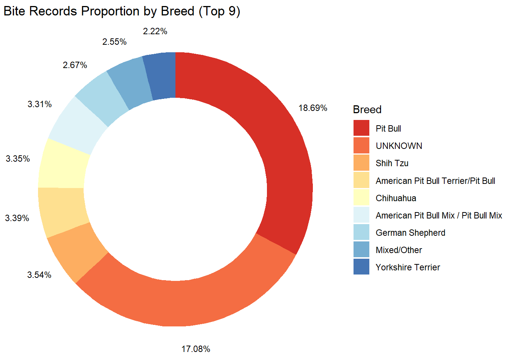
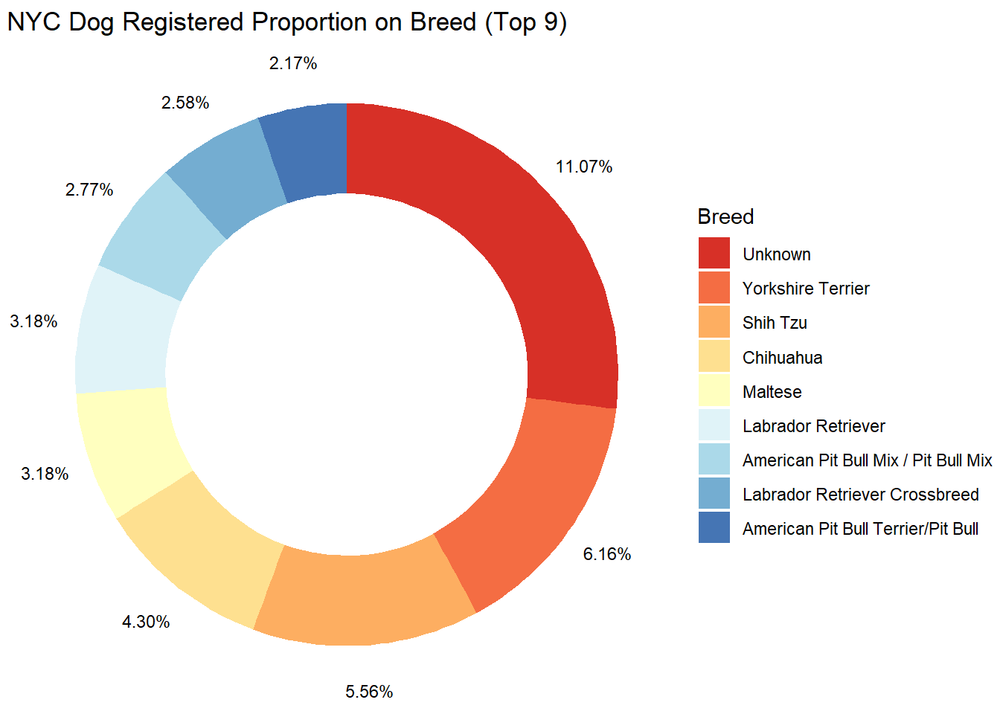
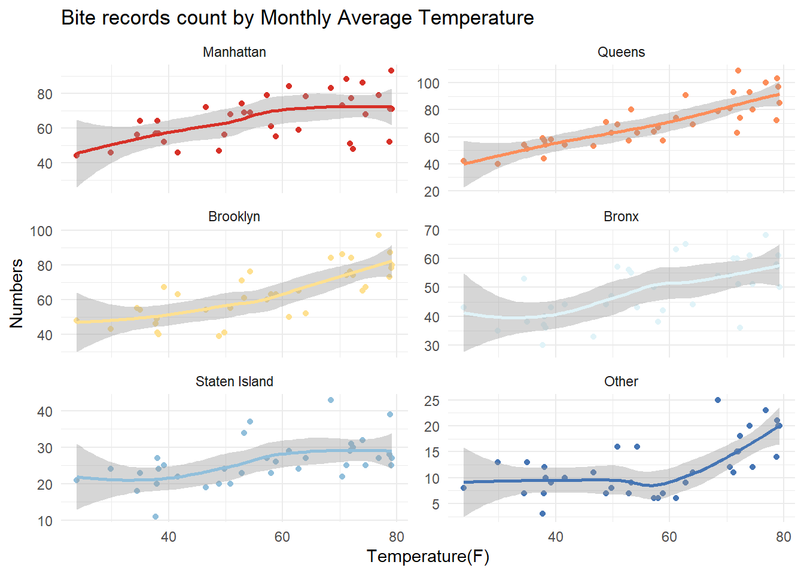
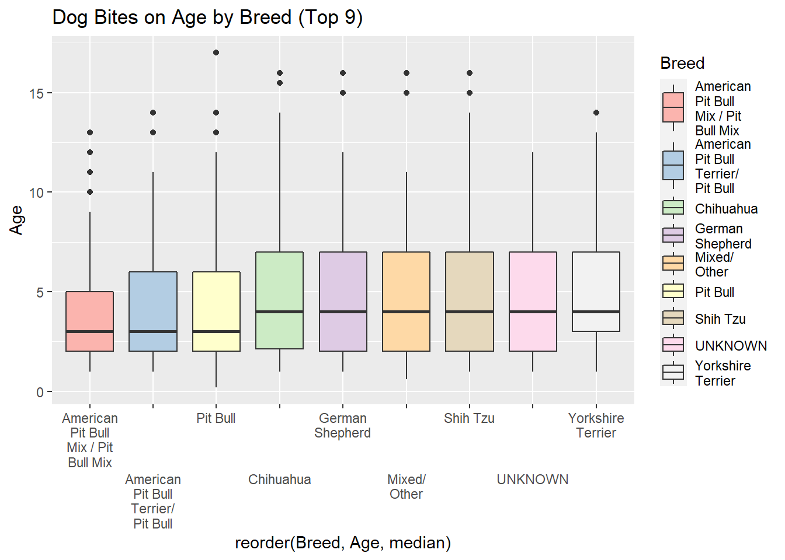

Chapter 5 Results
5.1 Analysis of Breed
In this part, we analyze the relationship between the number of dog bites and breeds of dogs. We noticed that our Dog Bites dataset contains thousands of breeds, while most of them only have few records of dog bites. We count dog bites by breeds and choose Top 9 breeds that have the most dog bite events for further discussion. Top 9 breeds are as follows: Pit Bull, UNKNOWN, Shih Tzu, American Pit Bull Terrier/Pit Bull, Chihuahua, American Pit Bull Mix / Pit Bull Mix, German Shepherd, Mixed / Other, and Yorkshire Terrier.
Then we use a plot to show the percentages of dog bites among the 9 breeds. We found that the breed with the highest proportion of biting people is “Pit Bull” and “UNKNOWN” comes second. The percentages of these two breeds are similar and much higher than other 6 breeds.
## [1] "C"
We aim to explore the real reason of this result. For example, why does “Pit Bull” have the highest proportion of biting people? Because a large proportion of dog owners have this breed of dogs and it becomes the most common breed in NYC, or because of its natural potential of being aggressive? To answer this question, we introduce our auxiliary dataset (NYC Dog Licensing Dataset), which is much larger than the dog bites dataset, to roughly estimate the population composition of breeds. This dataset could roughly reflect the composition of dogs in NYC, which is adequate for our discussion. In this auxiliary dataset, we also choose Top 9 breeds with the largest population to draw a plot. Top 9 breeds are as follows: UNKOWN, Yorkshire Terrier, Shih Tzu, Chihuahua, Maltese, Labrador Retriever, American Pit Bull Mix / Pit Bull Mix, Labrador Retriever Crossbreed, and American Pit Bull Terrier / Pit Bull.

Now we could compare the two plots for analysis. First, we noticed that “Pit Bull” is not in Top 9 breeds with the largest population. In other words, it is not the most common breed in NYC, while it has the highest proportion of biting people. Based on this, we can speculate that “Pit Bull” has the great natural potential of being aggressive. This is reasonable, since Pit Bulls were originally bred for bull baiting and dog fighting, and because of this heritage, they often show a tendency to attack other animals with a remarkable ferocity. Second, for the “UNKOWN” breed, it has the largest population in NYC according to the second plot. Therefore, for the situation that dogs of “UNKOWN” breed cause the second most dog bite events, we cannot directly determine whether this is simply because its highest proportion in dog owners’ home in NYC. However, we could still make some guesses. If dog owners do not know the breed of dogs, it will be very likely that they adopt the dogs rather than purchased them. However, the breed of dogs could be identified through later medical tests. Except for certain mixed dogs, it is not that difficult to know the breeds. If dog owners do not even know about the breed of their dogs, this may indicate that they do not have very good control over dogs and their dogs are more likely to bite people. Finally, we could summarize a general rule. For breeds that appear in the first plot while not in the second one, i.e., Pit Bull, German Shepherd, and Mixed / Other, they may be quite aggressive. They are not very common in NYC, while have the largest proportion of biting people. For breeds that appear in the second plot while not in the first one, i.e., Maltese, Labrador Retriever, and Labrador Retriever Crossbreed, they may be friendly. They are very common in NYC, while do not have the large proportion of biting events. For breeds that appear in both of the two plots, we could not directly determine their aggression.
5.2 Analysis of Borough
In this part, we analyze the relationship between the number of dog bites and boroughs. We noticed that our Dog Bites dataset contains records of 6 boroughs, i.e., Bronx, Manhattan, Brooklyn, Staten Island, Queens, and Other. We are curious about the distribution of dog bites in different boroughs. First, we draw a plot to show the distribution of dog bites in boroughs in 2015, 2016, and 2017. Except for a slight difference between Brooklyn and Manhattan in 2015 and 2016, the distributions among boroughs of the three years are similar. We found that “Queens” has the largest number of dog bites, and “Manhattan” and “Brooklyn” come second or third. The percentages of these three boroughs are similar and much higher than other 3 boroughs.
We aim to explore the real reason of this result. For example, why does “Queens” have the largest number of biting people? Because a large proportion of dog owners live and walk their dogs in this borough, or because of the insufficient management in this borough? To answer this question, we introduce our auxiliary dataset (NYC Dog Licensing Dataset), which is much larger than the dog bites dataset, to roughly estimate the population composition of boroughs. This dataset could roughly reflect the composition of dogs in NYC, which is adequate for our discussion. In this auxiliary dataset, the values of “Borough” is missing for all of the rows, thus we use the column “ZipCode” to classify the records to the corresponding boroughs.
Since the influence of different years is not obvious here, we will not concentrate on years in this part. We draw two bar charts to compare them clearly. The first one shows the numbers of dog bites in different boroughs, while the second one shows the numbers of (licensed) dogs in different boroughs which roughly reflects the composition and situation of dogs in NYC.
Now we could compare the two plots for analysis. First, we noticed that “Queens” is not the borough with most dogs. In other words, it does not contain the most dogs, while it has the highest proportion of biting people. Based on this, we can speculate that the management or related policies are not adequate in this borough and it is more at risk of being bitten by dogs in Queens. Second, for “Manhattan” and “Brooklyn”, they have largest population of dogs according to the second plot. Therefore, for the situation that dogs of “Manhattan” and “Brooklyn” cause the second and third most dog bite events, we cannot directly determine whether this is simply because their highest proportion in dogs or certain characteristics in these boroughs. Finally, we could summarize a general rule. For boroughs that contain not many dogs while have a high proportion of dog bites, i.e., Bronx and Queens, they may be more risky for dog bites. We could further analyze the dog bites laws and management polies in these boroughs. For boroughs that contain many dogs and have a high proportion of dog bites, i.e., Brooklyn and Manhattan, we could not directly speculate their risk and situation.
5.3 Analysis of Time
In this part, we analyze the relationship between the number of dog bites and time. First, from the first plot in 5.2, we have noticed that the situations of dog bites in 2015, 2016, and 2017 do not have a large difference. We also show the total numbers of dog bites in the three years and we cannot observe an obvious rule between them. During the analyzing process, we found that dog bites in different months have certain rules, thus we concentrate on months rather than years in this part to analyze the relationship between dog bites and time.
## # A tibble: 3 x 2
## # Groups: YearOfBite [3]
## YearOfBite count
## <dbl> <int>
## 1 2015 3557
## 2 2016 3212
## 3 2017 3511Since we have observed the differences between boroughs in 5.2, we are still curious about the relationship between dog bites and time in different boroughs. Therefore, we draw a bar chart to show the numbers of dog bites in different months in different boroughs.
We found that the number of dog bites increases in summer in almost all boroughs, which attracts our attention. We are curious about whether it is related to temperature. Will dogs be more aggressive when the temperature is higher? With this question, we use our second auxiliary dataset, i.e., Average temperature in NYC Data, to extract the temperature data. According to 3.4, we use this dataset to obtain the corresponding temperature for each dog bite. We use “MonthOfBite” and “YearOfBite” to match our rows to the corresponding temperature, and add the corresponding temperature as a new column named “Avg_temp” to the main dog bites dataset. Then we draw a scatterplot to show the numbers of dog bites under different temperature in different boroughs.

Obviously, the higher the temperature, the more dog bites. This is a general rule in almost all boroughs. We speculate that there are two reasons. First, the aggression of dogs may be influenced by temperature. Dogs may be more testy and aggressive on hot summer days. Second, dog owners may walk their dogs more often in summer. As we know, NYC is very cold in winter and dog owners may be afraid of cold and reduce their frequency of walking dogs. In most cases, dog bites occur outside the home of dog owners. Walking the dog less often will reduce the frequency of dog bites.
5.4 Analysis of Gender / SpayNeuter
In this part, we analyze the relationship between the number of dog bites and the gender / spayed and neutered status of dogs. We draw a heatmap to roughly analyze the two characteristics.
First, dogs of unknown gender have the largest proportion of biting people. Male dogs come second. The numbers of “UNKNOWN” and “Male” are similar and much higher than “Female”. The situation of dogs with the unknown gender is reasonable. Gender is a very easily known characteristic of dogs. Although dog owners do not know the gender of dogs when adopting or purchasing dogs, they could easily identify the gender of dogs through later medical tests. Except for few dogs, it is not difficult to know the gender. If dog owners do not even know about the gender of their dogs, this may indicate that they do not give good consideration to dogs, and do not have very good control over dogs, thus their dogs are more likely to bite people. As for the difference between male dogs and female dogs, we will discuss later.
Second, for male dogs and female dogs, spayed and neutered status will not influence the number of dog bites a lot. For male dogs, the number of those are neutered and the number of those are not neutered are similar. For female dogs, the number of those are spayed and the number of those are not spayed are similar. However, for unknown gender dogs, almost all of them are not spayed or neutered. This is reasonable. As we discussed above, gender is a very easily known characteristic of dogs. If dog owners do not even know about the gender of their dogs, this may indicate that they do not give good consideration to dogs, and do not have very good control over dogs. Spayed and neutered status is a good indication to measure if dog owners take good care of dogs, thus owners that do not even know the gender of dogs are more likely not to have spaying / neutering operations for their dogs. Without good control from owners, these dogs are more likely to bite people.
Now, we aim to further analyze the difference between dog bite numbers of male dogs and female dogs. We have found that male dogs have a much larger number of dog bites than female dogs from the above plot. We aim to explore the real reason of this result. Why does male dogs have the larger number of biting people? Because a large proportion of dog owners have male dogs and it becomes the most common in NYC, or because of its natural potential of being aggressive? To answer this question, we introduce our auxiliary dataset (NYC Dog Licensing Dataset), which is much larger than the dog bites dataset, to roughly estimate the population composition of genders. This dataset could roughly reflect the composition of dogs in NYC, which is adequate for our discussion.
We draw two bar charts to compare them clearly. The first one shows the numbers of dog bites in different genders, while the second one shows the numbers of (licensed) dogs in different genders which roughly reflects the composition and situation of dogs in NYC.
Now we could compare the two plots for analysis. Although more people prefer to keep male dogs, the difference in numbers between male ones and female ones is not that large, especially in 2015. Male dogs are only a little more than female dogs. Based on this, we can speculate that male dogs may have greater natural potential of being aggressive than female dogs.
5.5 Analysis of Age
In this part, we analyze the relationship between the number of dog bites and the age of dogs. Since we have observed the differences between boroughs in 5.2, we are still curious about the relationship between dog bites and age in different boroughs. Therefore, we draw a plot to show the numbers of dog bites with different ages of dogs in different boroughs.
We found that younger (i.e., 1-5 years old) dogs have the largest number of dog bites in almost all boroughs. We aim to explore the real reason of this result. Why does younger dogs have the highest number of biting people? Because a large proportion of dog owners keep younger dogs and younger ones becomes common in NYC, or because of their natural potential of being aggressive? To answer this question, we introduce our auxiliary dataset (NYC Dog Licensing Dataset), which is much larger than the dog bites dataset, to roughly estimate the population composition of breeds. This dataset could roughly reflect the composition of dogs in NYC, which is adequate for our discussion. Note that in this auxiliary dataset, each record represents a unique dog license that was active during the year, but not necessarily a unique record per dog, since a license that is renewed during the year results in a separate record of an active license period. As a result, we do not need to worry about the relationship between the age and dog growth. We just use this dataset to reflect the “roughly” composition of dogs with different ages in NYC. We draw two histograms to compare them clearly. The first one shows the numbers of dog bites of dogs with different ages, while the second one shows the numbers of (licensed) dogs with different ages which roughly reflects the composition and situation of dogs in NYC. We also show the corresponding density curves to for better analysis.
As expected, a large proportion of dog owners keep younger dogs, and the shapes of plots that denote dog bite numbers and dog numbers in NYC are similar. As a result, we could not directly determine the aggression of dogs with different ages.

In many breeds, a large proportion of dogs that bite people are young. The median ages of these dogs biting people are around 3-4 years in all breeds. Some breeds have outliers with a wide range. For example, Pit Bull even contains dog bite events in which the dogs are around 17.5 years old. The fluctuation degree of ages of dogs biting people in some breeds, e.g., American Pit Bull Mix / Pit Bull Mix, is relatively small.